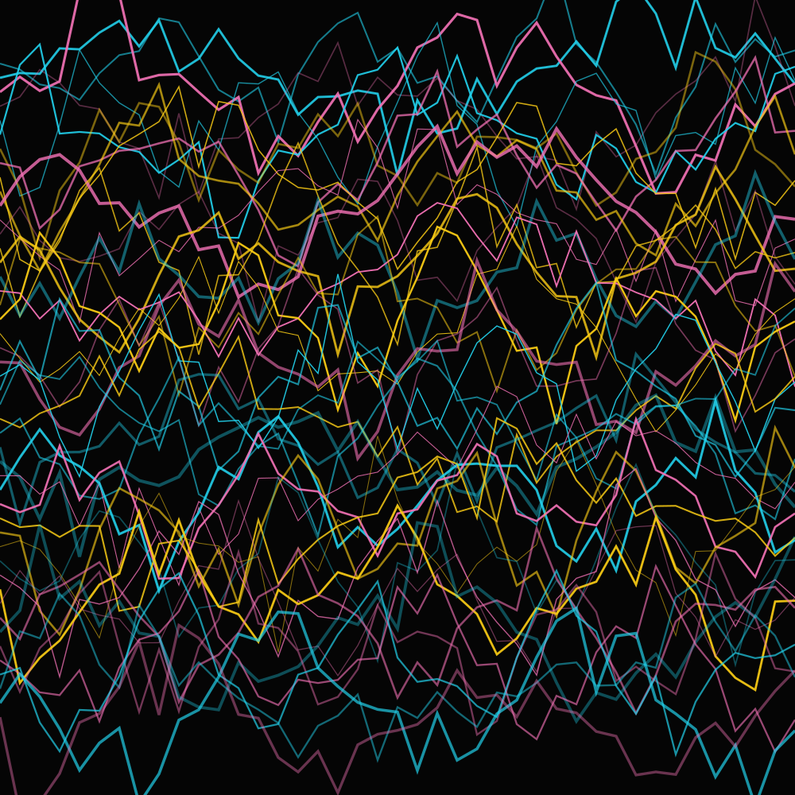
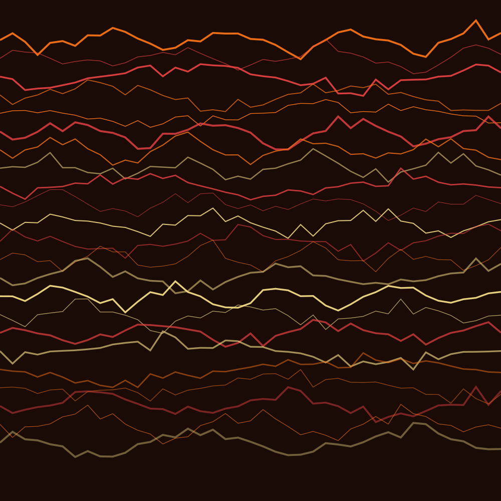

NÉROLI BRANCO
O frescor cítrico e delicado da flor de laranjeira que abre a fragrância com uma elegância vibrante e luminosa.

HAUTE PARFUMERIE
A ESSÊNCIA DA FEMINILIDADE EM SUA FORMA MAIS PURA
A TRINDADE OLFATIVA
Ingredientes nobres selecionados à mão nos campos mais exclusivos do mundo.
O frescor cítrico e delicado da flor de laranjeira que abre a fragrância com uma elegância vibrante e luminosa.
Colhida exclusivamente ao amanhecer no sul da França, oferece uma nota de coração rica, aveludada e intensamente feminina.
Uma nota de base quente e solar que traz sofisticação duradoura e uma aura de mistério magnético à pele.
HERANÇA E PRECISÃO
Cada frasco de Maison de Fleurs é o resultado de meses de maturação e destilação artesanal. Nossos elixires são criados para se fundirem à pele, revelando nuances únicas ao longo do dia.

A EXPERIÊNCIA
"Exemplo de depoimento: O perfume floral mais sofisticado que já experimentei. A fixação é impecável e as notas de rosa de Grasse se revelam de forma única ao longo do dia."
"Exemplo de depoimento: Uma verdadeira obra de arte engarrafada. Sinto-me envolta em um jardim de jasmins frescos. É delicado, mas extremamente marcante."
EDIÇÃO LIMITADA
Nossos lotes são numerados e produzidos em escala estritamente artesanal.
Fale diretamente com um de nossos consultores de fragrâncias para garantir o seu frasco da coleção de primavera com atendimento personalizado.